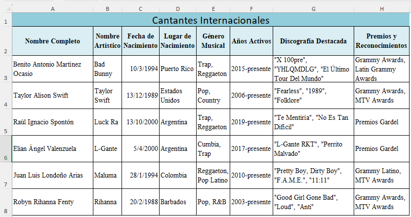

Formulas
Ejercicio Introductorio
Haz click aqui para descargar el Ejercicio IntroductorioActividad 1 - Estadisticas de la Selección Argentina
Haz click aqui para descargar la actividad Estadisticas Seleccion Argentina(Seleccionar Estadisticas Jugadores Hoja 1)
Actividad 2 - Restaurante
Haz click aqui para descargar la actividad RestauranteActividad 3 - Administración de mis ingresos
Haz click aqui para descargar la actividad Administración de mis ingresosVer video antes de comenzar la actividad:
Actividad 4 - Restaurante Vis
Haz click aqui para descargar la actividad Restaurante VisActividad 5 - Control de asistencia e inasistencias
Haz click aqui para descargar la actividad Control de asistencia e inasistenciasActividad 6 - Perfumeria
Haz click aqui para descargar la actividad PerfumeriaActividad 7 - Alimentación Saludable
Haz click aqui para descargar la actividad Alimentación SaludableActividad 8 - Operadores condicionales y logicos
Haz click aqui para descargar la actividad Operadores condicionales y logicosTarea 1 - Diferentes maneras de contar
Haz click aqui para descargar la tareaRealizar esta tarea cuyas correcciones seran expuestas en la siguiente clase.
Hay 3 hojas en el documento excel.
Tarea 2 - Diferentes manera de sumar
Haz click aqui para descargar la tareaRealizar esta tarea cuyas correcciones seran expuestas en la siguiente clase.
Hay 4 hojas en el documento excel.
Tarea 3 - Diferentes manera de promediar
Haz click aqui para descargar la tareaRealizar esta tarea cuyas correcciones seran expuestas en la siguiente clase.
Hay 2 hojas en el documento excel.
Plantillas de diseño
Cantantes Nacionales

Haz click aqui para descargar la actividad.
Cantantes Internacionales
Haz click aqui para descargar la actividad.
Modelo de examen
Haz click aqui para descargar el Modelo de examenSolo si se solicita la actividad, Enviar actividad a: hernanvladimirsky.prof@gmail.com con asunto: Apellido_Nombre Actividad N° Cens N°